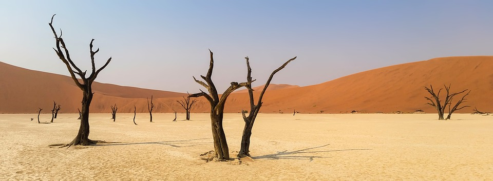
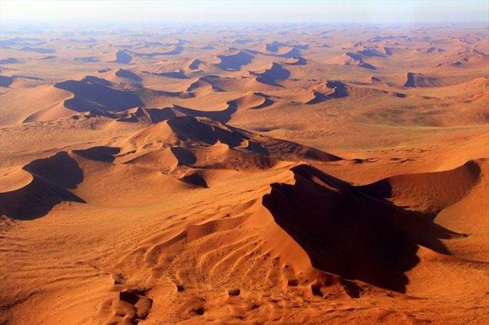
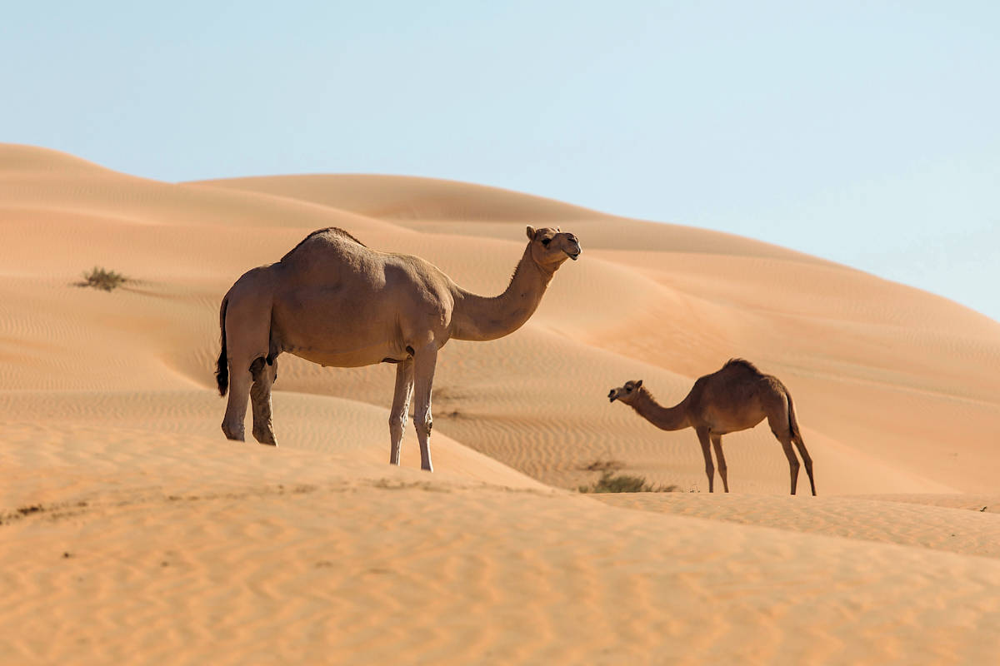

OPIS
Puščáva je površinska oblika ali pokrajina, ki prejme zelo malo padavin, torej izjemno suho območje z redkimi oblikami življenja. V drugih pogledih so to raznolika območja, zato enotna definicija puščave ne obstaja, njihova osnovna značilnost pa je, da se voda hitreje nabira z evapotranspiracijo kot prihaja s padavinami. Puščave prejmejo manj kot 250 mm padavin letno, posledično je pokrovnost rastlin majhna in vodotoki presahnejo, če nimajo vira vode izven puščavskega območja.

ZNAČILNOSTI
Puščavski ekosistem je suho okolje z ekstremnimi temperaturami, malo padavinami in redko vegetacijo, kjer so se organizmi prilagodili na preživetje s pomanjkanjem vode. Značilni so veliki dnevni temperaturni razponi, peščena ali kamnita tla in specializirane rastlinske ter živalske vrste

NASTANEK
Puščave povzroča kombinacija podnebnih pogojev in geoloških značilnosti. Največ puščav je nastalo zaradi primernega premikanja zračnih mas po planetu. Ko se Zemlja vrti okrog svoje vrtilne osi, ustvarja velikansko vrtinčenje v ozračju. Vroč zrak z ekvatorja se pretaka na sever in jug, kjer se na območju visokega tlaka spušča v nižje plasti.

ŽIVA BITJA
Živali, prilagojene za življenje v puščavah, se imenujejo xerokole. Ni dokazov, da bi se telesna temperatura sesalcev in ptic prilagajala različnim podnebjem, bodisi veliki vročini bodisi mrazu. Pravzaprav, z zelo redkimi izjemami, je njihova bazalna presnova odvisna od telesne velikosti, ne glede na podnebje, v katerem živijo.
